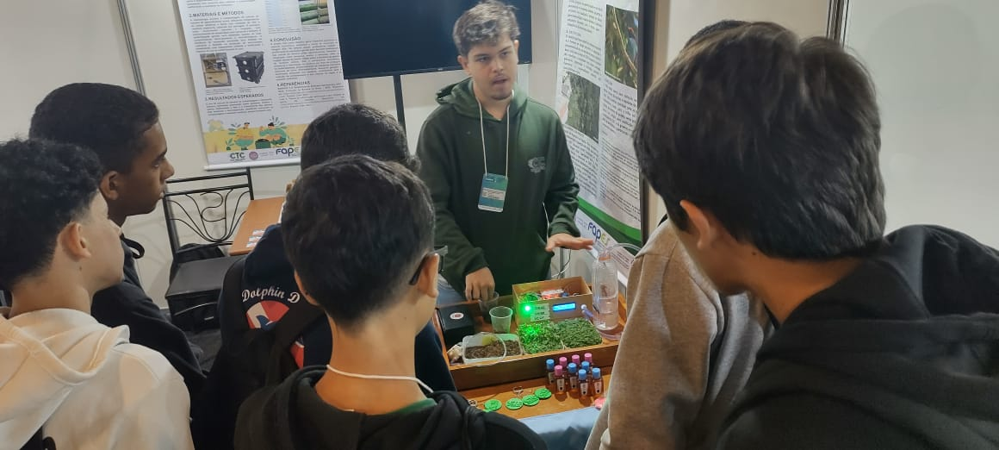

FEIRAS
Publicado em 08 de maio de 2024

Ao longo da minha jornada como bolsista no CEET Giuseppe Altoé, tive a oportunidade de participar de diversas feiras tecnológicas, científicas e ambientais, onde eu e minha equipe apresentamos nossos projetos com muito orgulho e dedicação.
Esses eventos são momentos únicos em que levamos nosso trabalho para fora da sala de aula, compartilhando ideias com alunos de todas as idades, professores, agricultores e até mesmo pesquisadores de outras instituições. É sempre uma experiência enriquecedora, que amplia nossa visão e fortalece o impacto do que estamos desenvolvendo.
Apresentar nossos projetos nessas feiras é uma forma de mostrar que a educação técnica pode transformar realidades e gerar soluções práticas para o mundo ao nosso redor.
FORNO GRANDE
Publicado em 27 de abril de 2025
Trilha ao Topo do Forno Grande
Uma das experiências mais desafiadoras e marcantes que vivi foi a trilha até o topo da montanha de Forno Grande, localizada no município de Castelo, Espírito Santo. Com seus 2.039 metros de altitude, Forno Grande é a segunda montanha mais alta do estado e o segundo ponto mais alto do Espírito Santo.
A trilha não é fácil — ela exige preparo físico, foco e força de vontade. Foram cerca de 4 horas de caminhada intensa, passando por trechos íngremes, pedras soltas e muita mata. É o tipo de caminho que te testa de todas as formas: fisicamente, mentalmente e emocionalmente.
Mas a recompensa vale cada passo. Chegar ao cume e contemplar a vista incrível do alto da montanha é uma sensação indescritível — de superação, paz e conexão com a natureza. É um daqueles momentos que ficam para sempre na memória.
Essa trilha me ensinou muito sobre persistência e sobre respeitar os limites do corpo e da natureza. Uma experiência que vai além da aventura: é crescimento pessoal em cada subida.
ARDUINO
Publicado em 25 de março de 2025


Projeto de Irrigação Automática com Arduino
Um dos projetos que desenvolvi como bolsista foi um sistema de irrigação automática usando Arduino, ideal para o cultivo de microverdes e hortas pequenas. O objetivo principal é economizar água e garantir que as plantas recebam a quantidade ideal de umidade.
O funcionamento é simples e eficiente: o sistema utiliza um sensor de umidade do solo para monitorar constantemente o nível de umidade. Quando o solo está seco, o sensor envia essa informação para o Arduino, que aciona uma bomba ou válvula para iniciar a irrigação automaticamente.
Assim que a umidade atinge um nível adequado, o sistema desliga automaticamente a irrigação para evitar o desperdício de água. Todos os dados de umidade são exibidos em tempo real em um display LCD, permitindo fácil acompanhamento das condições do solo.
Esse projeto é um excelente exemplo de como a automação pode ser aplicada na agricultura, mesmo em pequenas escalas, contribuindo para práticas mais sustentáveis e inteligentes.
ROBÓTICA
Publicado em 16 de dezembro de 2024
Minha Participação no Torneio Brasileiro de Robótica (TBR)
Uma das experiências mais marcantes da minha jornada acadêmica foi participar do Torneio Brasileiro de Robótica (TBR), uma competição nacional que reúne equipes de estudantes de todo o país para desenvolver soluções em robótica com foco na prática, criatividade e trabalho em equipe.
Fui integrante da equipe ROBOT-G, representando minha escola nas etapas regional e nacional do torneio. Na etapa regional, que aconteceu no Colégio Batista em Vila Velha, nossa equipe conquistou o 2º lugar com muito esforço e dedicação.
Com essa conquista, avançamos para a etapa nacional, realizada no Colégio Marista, também em Vila Velha, em um evento que durou três dias e contou com equipes de diversas partes do Brasil. Foi uma competição desafiadora e cheia de aprendizado. Nossa equipe demonstrou muita união e desempenho técnico, e fomos premiados com o 3º lugar nacional.
Participar do TBR foi uma oportunidade incrível de aplicar conhecimentos em robótica, resolver problemas reais em equipe e representar nossa escola em um evento de alto nível. Sem dúvidas, foi um momento inesquecível e motivador para seguir estudando e inovando.